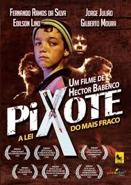
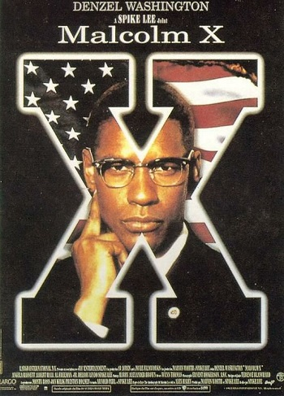
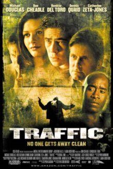
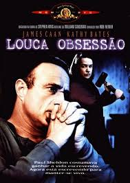

|  |
PIXOTE: A LEI DO MAIS FRACO (1981)Direção: Héctor Babenco Menor abandonado de 11 anos vive na rua após a fuga de um reformatório, onde aprendeu bastante sobre o crime ao conviver com todos os tipos de delinquentes. Ele sobrevive no Rio de Janeiro atuando como traficante, assassino e, até, cafetão. DISPONÍVEL EM: LOOKE |
O CIDADÃO ILUSTRE (2016)Direção: Gastón Duprat, Mariano Cohn Um escritor argentino e vencedor do Prêmio Nobel, radicado há 40 anos na Europa, volta para sua terra natal, ao povoado onde nasceu e que inspirou a maioria de seus livros, para receber o título de Cidadão Ilustre da cidade. DISPONÍVEL EM: NETFLIX |
|
|  |
MALCOLM X (1992)Direção: Spike Lee O líder afro-americano Malcolm X tem o pai assassinado pela Klu Klux Klan e sua mãe internada por insanidade. Preso aos 20 anos de idade, Malcolm se converte ao islamismo e passa a pregar seus ideais. DISPONÍVEL EM: PRIME VIDEO |
|  |
TRAFFIC (2000)Direção: Steven Soderbergh Um thriller contemporâneo ambientado no mundo das drogas, sobre os altos ganhos e riscos do tráfico, relatados através de histórias interligadas, algumas altamente pessoais, outras cheias de intriga e perigo. DISPONÍVEL EM: PRIME VIDEO |
AMANTES ETERNOS (2013)Direção: Jim Jarmusch Conheça a história de amor e de reencontro entre o vampiros Adam, um músico que está deprimido e cansado com o rumo que a sociedade tomou, e Eve. O romance dos dois, que já dura séculos, é perturbado pela chegada de sua incontrolável irmã mais nova. DISPONÍVEL EM: PRIME VIDEO |
 EXTRA
EXTRA
|  |
LOUCA OBSESSÃO (1992)Direção: Rob Reiner O famoso escritor Paul Sheldon sofre um acidente de carro e é socorrido pela enfermeira Annie, que afirma ser sua fã número um. DISPONÍVEL EM: meios ilícitos |